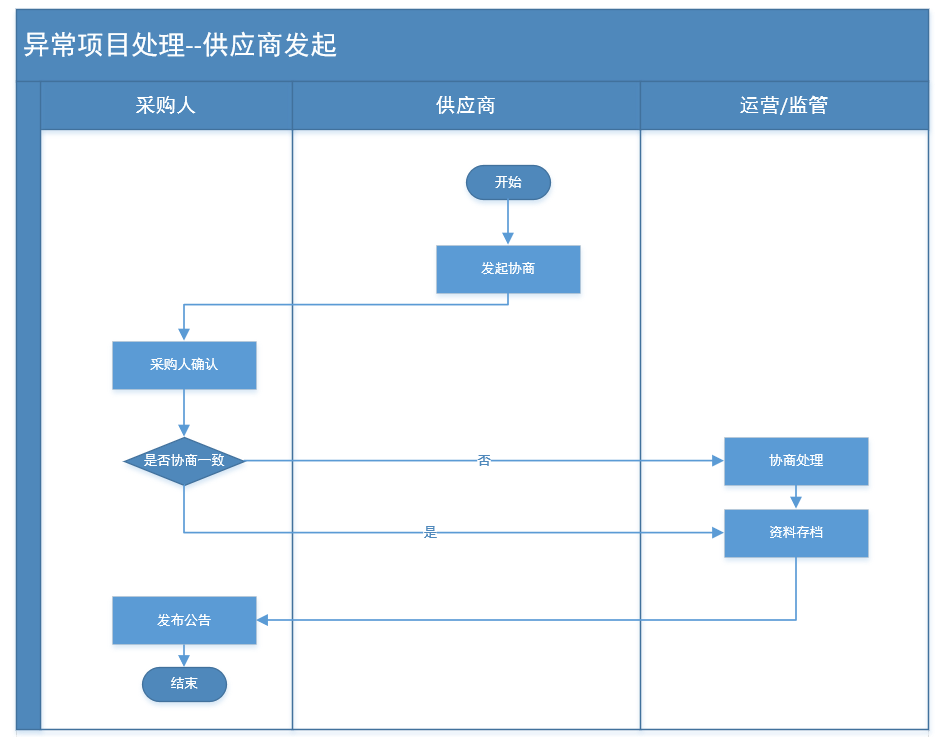
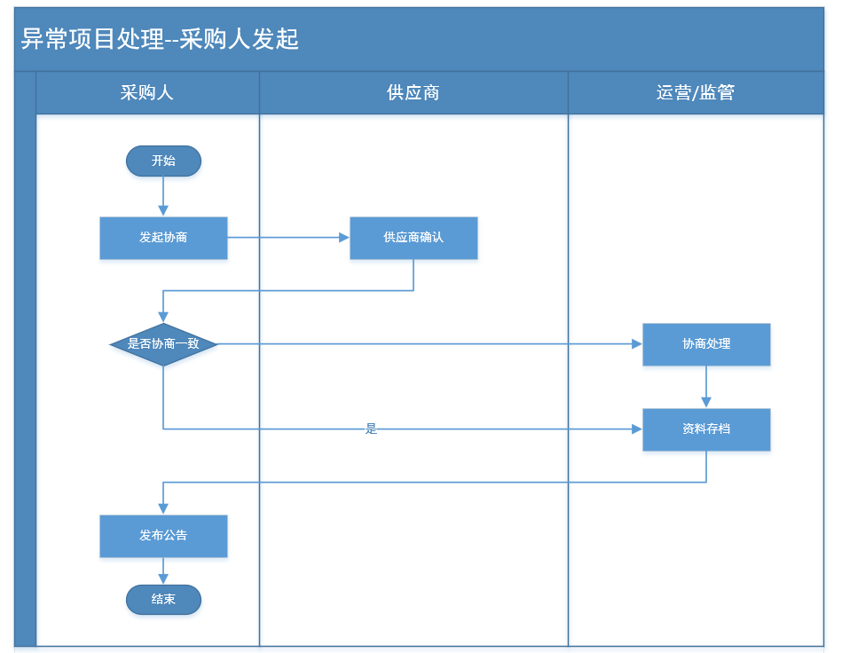

项目异常处理
用于处理已成交项目的结果变更，包括变更成交供应商及终止采购任务。异常处理时首先由甲乙双方进行协商，协商结果交由管理部门或运营部门进行记录、存档，并根据电子卖场规则对甲乙双方进行处理。
1.业务流程
1.1供应商发起

流程说明:
1、项目成交后，供应商因为自身原因、采购人原因或其他原因，无法履约项目时，可以发起项目协商；
2、协商一致，可直接提交至运营或管理部门处理。
3、协商不一致，也可以提交至运营部门或管理部门处理。
4、管理部门处理完成后，由采购人发布公告。
1.2采购人发起

流程说明：
1、项目成交后，采购因为自身原因、供应商原因或其他原因，无法履约项目时，可以发起项目协商；
2、协商一致，可直接提交至运营或管理部门处理。
3、协商不一致，也可以提交至运营部门或管理部门处理。
4、管理部门处理完成后，由采购人发布公告。